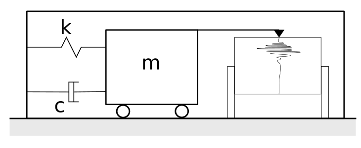

Ground motion uncertainty
in urban areas
Marco De Angelis
Created by Marco De Angelis
- About the RP
- PhD advert online
- Liverpool Institute for Risk and Uncertainty Training + Software
Objectives
- To investigate the effect of epistemic uncertainty for earthquake characterisation
- To develop models and tools for engineering applications based on site measurements
- To analyze recordings of large earthqukes in near-fields
- To develop robust methods for host-to-target conversions of Ground-motion prediction equations based on stochastic modelling
Seismographs
- Chang seismoscope 132 BC
- Analogical
- Mechanical
- Optical Richter 1930
- Electromagnetic
- Digital
Filippo Cecchi 1875, pendolum

\[ m\ddot{u} + c\dot{u} + ku = -m\ddot{u}_g \] \[ \ddot{u} + 2 \xi \omega_0 \dot{u} + \omega_0^2 u = -\ddot{u}_g \]
World-wide standard seismograph network, WWSSN
- Established 1961 atomic test ban
- 150 modern seismic stations
- Global interconnected network
IRIS WEB
International agencies seismic networks
Epistemic uncertainty
- Arises from incomplete knowledge
- Incertitude arises from
- limited sample size
- measurement error
- surrogate data
- Reducible by empirical effort
- Ex.: Attenuation model, seismic source, magnitude
- limited sample size
- measurement error
- surrogate data
Aleatory uncertainty
- Arises from natural stochasticity
- Variability arises from
- spatial variation
- temporal fluctuations
- manufacturing/material differences
- Not reducible by empirical effort
- Ex.: Two identical accelerograms
- spatial variation
- temporal fluctuations
- manufacturing/material differences
Data acquisition
- Stream data in real time
- In-built sensorsGetAccuracy(self)
- Read geolocation of device
- Secure transfer protocol
#-*-coding:utf8;-*-
#qpy:3
#qpy:console
print("This code records accelerations from your android")
import android
import time
#import matplotlib.pyplot as plt
droid = android.Android()
dt = 100 #100ms between sensing
endTime = 10000 #sample for 3000ms
timeSensed=0
droid.startSensingTimed(2,dt)
while timeSensed <= endTime:
#print(droid.sensorsReadAccelerometer().result)
x=droid.sensorsReadAccelerometer().result[0]
y=droid.sensorsReadAccelerometer().result[1]
z=droid.sensorsReadAccelerometer().result[2]
print(z)
time.sleep(dt/1000.0)
timeSensed+=dt
droid.stopSensing()
Demo
import csv
with open('data.csv') as csvfile:
reader = csv.reader(csvfile, delimiter=',')
z = []
for row in reader:
z.append(float(row[0]))
import matplotlib.pyplot as plt
plt.figure(figsize=(12,6))
plt.title("Vertical acceleration")
plt.xlabel("time steps")
plt.ylabel("z[m/s2]")
plt.plot(z)
plt.show()
| Hedged numerical expression |
Interpretation |
|---|---|
| \[ \text{mathematical}\ x \] | \[ x \] |
| \[ \text{exactly}\ x \] | \[ x \pm 10^{-(d+1)} \] |
| \[ \text{x} \] | \[ x \pm 0.5 \times 10^{-d} \] |
| \[ \text{about}\ x \] | \[ x \pm 2 \times 10^{-d} \] |
| \[ \text{around}\ x \] | \[ x \pm 10 \times 10^{-d} \] |
| \[ \text{count}\ x \] | \[ x \pm \sqrt{x} \] |
| \[ \text{between}\ x\ \text{and}\ y \] | \[ \left[x, y \right] \] |
Ferson, S., O'Rawe, J., Antonenko, A., Siegrist, J., Mickley, J., Luhmann, C.C., Sentz, K. and Finkel, A.M., 2015. Natural language of uncertainty: numeric hedge words. International Journal of Approximate Reasoning, 57, pp.19-39.
[[-0.190,-0.188],
[-0.250,-0.249],
[-0.273,-0.272],
[-0.270,-0.269],
[-0.209,-0.208],
[-0.262,-0.262],
[-0.208,-0.206],
[1.795,1.796],
[-2.472,-2.470],
[-0.751,-0.749],
[-0.263,-0.262],
[-0.831,-0.830],
[-0.069,-0.068],
[-0.595,-0.594],
[0.224,0.225],
[1.616,1.617],
[1.055,1.056],
[-1.856,-1.855],
[-0.621,-0.620],
[1.294,1.295],
[-0.300,-0.298],
[0.267,0.269],
[-2.038,-2.037],
[0.175,0.176],
[-1.866,-1.860],
[2.316,2.317],
[0.521,0.522],
[3.438,3.439],
[-0.505,-0.504]]
Institute for Risk and Uncertainty
ESR 4.4 Load characterisation with
vague and sparse information
Liam Comerford
Presented by Edoardo Patelli, (on behalf of Michael Beer)
END
“Uncertainties appear everywhere! … When using a mathematical model, careful attention must be given to uncertainties in the model.”Richard Feynman
“Uncertainty quantification is the missing piece of the puzzle in large scale computations.”Tim Barth
“We have to make the best model we possibly can, and then not trust it.”Robert Costanza